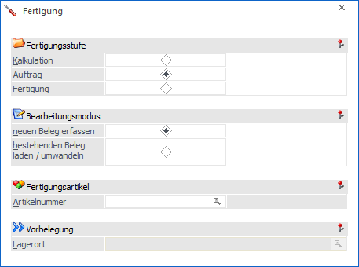
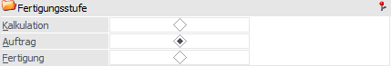
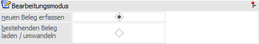
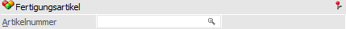
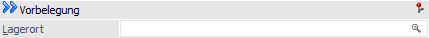
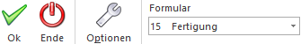
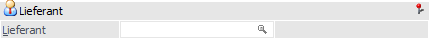
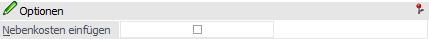

Über den Menüpunkt…
1 WinLine FAKT
1 Erfassung
1 Belegerfassung
1 Fertigung
… kann der Fertigungsprozess von Fertigungsstücklisten gesteuert werden. Grundvoraussetzung hierfür ist, neben der entsprechenden Lizenz, eine individuelle Belegvorlage mit der Menüpunkt-Zuweisung "2 - Fertigungsstücklisten".
Hinweis
Weitere Informationen zu den Themenbereichen "Stückliste", "Handelsstückliste", "Fertigungsstückliste" und "Produktionsstückliste" können sie dem Kapitel "Exkurs - Stückliste" entnehmen.

Das Fenster "Fertigung" dient als Dreh- und Angelpunkt der Prozesssteuerung. D.h. hierüber wird gesteuert, ob neue Fertigungen angelegt oder bestehende editiert bzw. gewandelt werden sollen. Nach Hinterlegung aller benötigten Eingaben wird das "Fertigung erfassen" geöffnet, bei dem es sich um eine individuelle Belegvorlage mit folgenden Sonderfunktionen handelt:
ü neu angelegte Belege erhalt die Kennzeichnung "Fertigungsbeleg"
ü im "Belege - Matchcode" werden nur Fertigungsbelege dargestellt
ü es können nur Artikel mit der Option "Fertigungsstückliste" oder lagerneutrale Artikel erfasst werden
ü bei dem Schließen des Fensters "Stückliste bearbeiten" via Button "Ok" bzw. der Taste F5 wird der Einstandspreis der Komponenten als "Einzelpreis" gesetzt
ü mit Hilfe der Taste F3 auf der Spalte "Einzelpreis" kann jederzeit der Einstandspreis der Komponenten als "Einzelpreis" gesetzt werden
ü handelt es sich um Nebenkosten (z.B. zur Abbildung von Fertigungskosten), so wird der Einzelpreis im Gegensatz zu einer normalen Artikelzeile eines Fertigungsartikels, nicht mit dem Einstandspreis der Komponenten vorbelegt, sondern wird über eine standardmäßige Preisfindung ermittelt
Fertigungsstufe

Ø Kalkulation / Auftrag / Fertigung
An dieser Stelle kann die Fertigungsstufe des neu zu erstellenden oder zu editierenden bzw. zu wandelnden Fertigungsbelegs ausgewählt werden.
Beim Druck bzw. Rechnen der einzelnen Belege, werden dabei die einzelnen Stammdatenbereiche und Bewegungsdaten aktualisiert.
ü Kalkulation
ü - - -
ü Auftrag
ü Erzeugung der Rückstandsliste (Artikelbedarfsvorschau)
ü Fertigung
ü Aktualisierung der Rückstandsliste (Artikelbedarfsvorschau)
ü Lagerupdate
ü Verrechnung (hier nicht aufgeführt)
ü Verkaufsstatistik
ü Artikel- und Kundenupdate
ü Bereitstellung der FIBU- und KORE-Daten
Hinweis
Wird eine Stufe übersprungen, so werden die Werte automatisch bei der nächsten bearbeiteten Fertigungsstufe aktualisiert.
Bearbeitungsmodus

Ø Modus
An dieser Stelle kann definiert werden, ob ein neuer Fertigungsbeleg erfasst oder ein bestehender editiert bzw. gewandelt werden soll.
Fertigungsartikel

Ø Artikelnummer
Bei der Neuanalge eines Fertigungsbelegs muss an dieser Stelle der zu fertigende Artikel hinterlegt werden, wobei nur Aritkel mit der Option "Fertigungsstückliste" erlaubt sind. Wenn hingegen ein Beleg editiert bzw. gewandelt werden soll, so ist die Eingabe optional.
Vorbelegung

Ø Lagerort
Handelt es sich um die Neuanlage eines Belegs und wurde der Fertigungsartikel mit einer Lagerortstruktur versehen, so kann hier der Ziellagerort der Fertigung hinterlegt werden.
Buttons

Ø Ok
Mit dem Button "Ok" bzw. der Taste F5 wird das Fenster geschlossen und das "Fertigung erfassen" gestartet. In diesem wird alles gemäß des Ausgangsfenster vorbesetzt bzw. es wird automatisch der "Belege - Matchcode" öffnet.
Ø Ende
Durch Anwahl des Buttons "Ende" bzw. der Taste ESC wird das Fenster geschlossen und alle nicht gespeicherten Eingaben verworfen.
Ø Optionen
Mit Hilfe dieses Buttons wird der Bereich "Optionen" geöffnet, in welchem folgende Eingaben getätigt werden können:
ü Lieferant

ü Nebenkosten einfügen

Hinweis
Über Nebenkosten können z.B. Fertigungskosten, welche nicht die Komponenten betreffen, abgebildet werden. Hierbei wird der Einzelpreis, im Gegensatz zur normalen Artikelzeile, nicht mit dem Einstandspreis der Komponenten vorbelegt, sondern wird über eine standardmäßige Preisfindung ermittelt.
Ø Formular
Über die Auswahlbox "Formular" kann gewählt werden, in welcher Form die Fertigungserfassung stattfinden soll. Hierbei werden alle Belegvorlage mit der Menüpunkt-Zuweisung "2 - Fertigungsstücklisten" vorgeschlagen.
Hinweis
Die Definition der Formulare für die individuelle Gestaltung erfolgt im Programm WinLine START über den Menüpunkt "Vorlagen - Vorlagen Anlage - Individuelle Formulare".